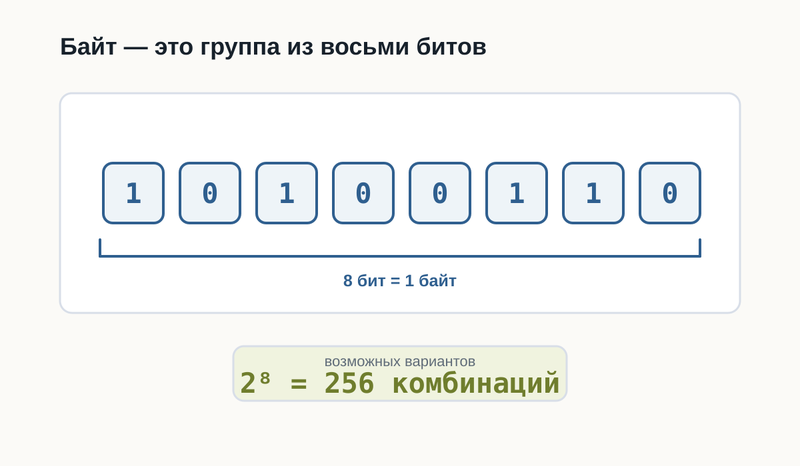
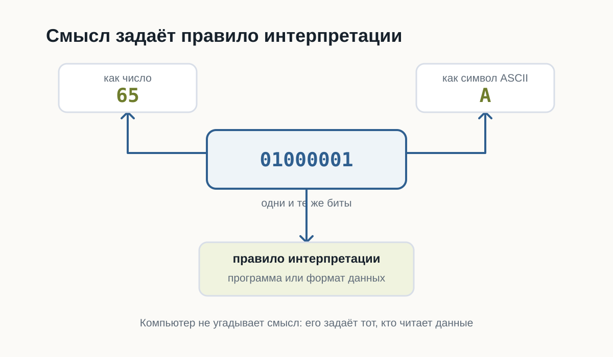
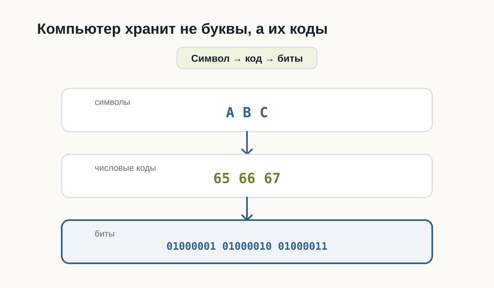
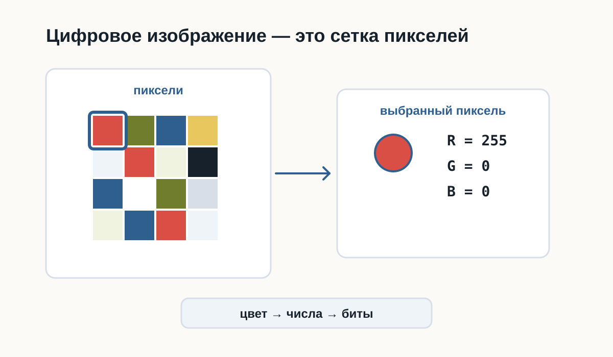
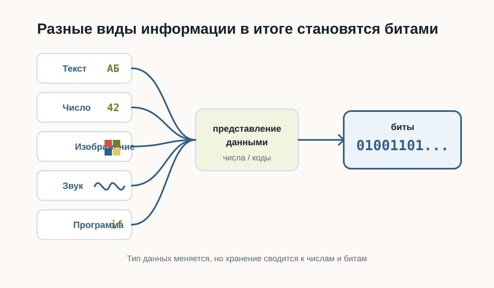

2.3 Как компьютер хранит данные
Главный вопрос главы:
Если компьютер знает только 0 и 1, как он хранит текст, числа, фотографии, музыку и программы?
После предыдущей главы мы уже знаем важную вещь:
Любая информация внутри компьютера состоит только из нулей и единиц.
Но возникает следующий вопрос.
Когда вы открываете фотографию, запускаете игру или читаете текстовый файл, вы не видите последовательность вроде
010011010100101011...Вы видите изображение, буквы, числа и кнопки.
Почему?
Потому что сами биты ничего не означают.
Смысл появляется только тогда, когда существует правило их интерпретации.
Бит — самая маленькая единица информации
Бит может принимать только два значения.
0или
1Это похоже на обычный выключатель.
Выключено -> 0
Включено -> 1Одного бита почти никогда недостаточно.
Поэтому биты объединяют в группы.
Байт
Самая известная группа — байт.
Один байт состоит из восьми битов.
10100110или
00000000или
11111111Всего существует
2 × 2 × 2 × 2 × 2 × 2 × 2 × 2 = 256различных комбинаций.
Поэтому один байт способен хранить одно из 256 различных значений.
Это очень удобно.

Как компьютер понимает, что хранится в байте?
Представьте число
65Что это означает?
Без контекста — ничего.
Это может быть:
- возраст;
- скорость;
- номер страницы;
- температура.
То же самое происходит с байтами.
Последовательность
01000001сама по себе ничего не означает.
Но если договориться считать её символом ASCII, получится буква
AЕсли считать её числом —
65То есть одинаковые биты могут означать разные вещи.
Все зависит от правил.

Как хранится текст
Компьютер не хранит буквы.
Он хранит номера букв.
Например,
| Символ | Код |
|---|---|
| A | 65 |
| B | 66 |
| C | 67 |
Когда вы набираете
ABCв памяти оказывается примерно следующее:
65 66 67или в двоичном виде
01000001
01000010
01000011Позже программа снова превращает эти числа в буквы.

Почему этого оказалось недостаточно
ASCII содержал только 128 символов.
Для английского языка этого хватало.
Но как быть с
Привет
こんにちは
مرحبا
😀Появился Unicode.
Он назначает номер практически каждому символу, существующему сегодня.
Поэтому современные программы способны одновременно показывать русский, японский, арабский и эмодзи.
Как хранится число
Компьютер не знает, что такое “сорок два”.
Он хранит двоичное представление.
Например,
42становится
00101010Для компьютера это просто набор битов.
Если программа знает, что это число, она выполняет арифметику.
Если считает, что это символ, получит совершенно другой результат.
Как хранится изображение
Фотография — это вовсе не рисунок.
Это огромная таблица пикселей.
Например,
🟥 🟩 🟦
⬜ ⬛ 🟨Каждый пиксель имеет цвет.
Цвет тоже можно записать числами.
Например,
Красный
R = 255
G = 0
B = 0или
Зелёный
R = 0
G = 255
B = 0Таким образом фотография превращается в огромное количество чисел.
А числа уже легко представить битами.

Как хранится музыка
Музыка — это изменение давления воздуха.
Микрофон много тысяч раз в секунду измеряет это давление.
Получается последовательность чисел.
Например,
125
127
130
126
120
...Компьютер хранит именно эти числа.
При воспроизведении динамик выполняет процесс в обратную сторону.
Как хранится программа
Самое интересное — программы тоже являются данными.
Файл Python
print("Hello")хранится как обычный текст.
Но после запуска интерпретатор читает этот текст и начинает выполнять инструкции.
То есть один и тот же набор битов может быть:
- текстом;
- программой;
- изображением;
- музыкой.
Все определяется тем, кто именно читает эти данные.

Главное, что нужно запомнить
Компьютер хранит только последовательности битов.
Никаких букв, фотографий или музыки внутри памяти нет.
Есть лишь числа.
Именно программы знают, как превратить эти числа обратно в текст, изображения, звук или команды.
Поэтому можно сказать так:
Компьютер хранит не сами данные, а их двоичное представление.
Что дальше?
Теперь мы понимаем:
- почему всё сводится к битам;
- как появляются байты;
- почему существуют кодировки;
- как текст, изображения и числа становятся последовательностями битов.
Но остается следующий вопрос.
Даже если программа уже хранится в памяти как набор битов, как процессор начинает её выполнять?
Именно об этом будет следующая глава:
«Как компьютер выполняет программы».